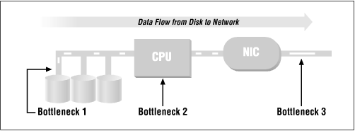

Using Samba
Robert Eckstein, David Collier-Brown, Peter Kelly1st Edition November 1999
1-56592-449-5, Order Number: 4495
416 pages, $34.95
|
|
|
|
|
Using SambaRobert Eckstein, David Collier-Brown, Peter Kelly1st Edition November 1999 1-56592-449-5, Order Number: 4495 416 pages, $34.95 |
B.3 Sizing Samba Servers
Sizing is a way to prevent bottlenecks before they occur. The preferred way to do this is to know how many requests per second or how many kilobytes per second the clients will need, and ensure that all the components of the server provide at least that many.
B.3.1 The Bottlenecks
The three primary bottlenecks you should worry about are CPU, disk I/O, and the network. For most machines, CPUs are rarely a bottleneck. A single Sun SPARC 10 CPU can start (and complete) between 700 and 800 I/O operations a second, giving approximately 5,600 to 6,400KB/s of throughput when the data averages around 8KBs (a common buffer size). A single Intel Pentium 133 can do less only because of somewhat slower cache and bus interfaces, not due to lack of CPU power. Purpose-designed Pentium servers, like some Compaq servers, will be able to start 700 operations per CPUs, on up to four CPUs.
Too little memory, on the other hand, can easily be a bottleneck; each Samba process will use between 600 and 800KB on Intel Linux, and more on RISC CPUs. Having less will cause an increase in virtual memory paging and therefore a performance hit. On Solaris, where it has been measured, smbd will use 2.6 MB for program and shared libraries, plus 768KB for each connected client. nmbd occupies 2.1 MB, plus 496KB extra for its (single) auxiliary process.
Hard disks will always bottleneck at a specific number of I/O operations per second: for example, each 7200 RPM SCSI disk is capable of performing 70 operations per second, for a throughput of 560KB/s; a 4800 RPM disk will perform fewer than 50, for a throughput of 360KB/s. A single IDE disk will do still fewer. If the disks are independent, or striped together in a RAID 1 configuration, they will each peak out at 400 to 560KB/s and will scale linearly as you add more. Note that this is true only of RAID 1. RAID levels other than 1 (striping) add extra overhead.
Ethernets (and other networks) are obvious bottleneck: a 10 Mb/s (mega bits/second) Ethernet will handle around 1100KB/s (kilo bytes/s) using 1500-byte packets A 100 Mb/s Fast Ethernet will bottleneck below 65,000KB/s with the same packet size. FDDI, at 155 Mb/s will top out at approximately 6,250KB/s, but gives good service at even 100 percent load and transmits much larger packets (4KB).
ATM should be much better, but as of the writing of this book it was too new to live up to its potential; it seems to deliver around 7,125 Mb/s using 9KB packets.
Of course, there can be other bottlenecks: more than one IDE disk per controller is not good, as are more than three 3600 SCSI-I disks per slow/narrow controller, or more than three 7200 SCSI-II disks per SCSI-II fast/wide controller. RAID 5 is also slow, as it requires twice as many writes as independent disks or RAID 1.
After the second set of Ethernets and the second disk controller, start worrying about bus bandwidth, especially if you are using ISA/EISA buses.
B.3.2 Reducing Bottlenecks
From the information above we can work out a model that will tell us the maximum capability of a given machine. The data is mostly taken from Brian Wong's Configuration and Capacity Planning for Solaris Servers, [ 1] so there is a slight Sun bias to our examples.
A word of warning: this is not a complete model. Don't assume that this model will predict every bottleneck or even be within 10 percent in its estimates. A model to predict performance instead of one to warn you of bottlenecks would be much more complex and would contain rules like "not more than three disks per SCSI chain". (A good book on real models is Raj Jain's The Art of Computer Systems Performance Analysis.[ 2]) With that warning, we present the system in Figure B.2.
[2] See Jain. Raj, The Art of Computer Systems Performance Analysis, New York, NY (John Wiley and Sons), 1991, ISBN 0-47-150336-3.
Figure B.2: Data flow through a Samba server, with possible bottlenecks
The flow of data should be obvious. For example, on a read, data flows from the disk, across the bus, through or past the CPU, and to the network interface card (NIC). It is then broken up into packets and sent across the network. Our strategy here is to follow the data through the system and see what bottlenecks will choke it off. Believe it or not, it's rather easy to make a set of tables that list the maximum performance of common disks, CPUs, and network cards on a system. So that's exactly what we're going to do.
Let's take a concrete example: a Linux Pentium 133 MHz machine with a single 7200 RPM data disk, a PCI bus, and a 10-Mb/s Ethernet card. This is a perfectly reasonable server. We start with Table B.2, which describes the hard drive - the first potential bottleneck in the system.
Table B.2: Disk Throughput Disk RPM
I/O Operations/second
KB/second
7200
70
560
4800
60
480
3600
40
320
Disk throughput is the number of kilobytes of data that a disk can transfer per second. It is computed from the number of 8KB I/O operations per second a disk can perform, which in turn is strongly influenced by disk RPM and bit density. In effect, the question is: how much data can pass below the drive heads in one second? With a single 7200 RPM disk, the example server will give us 70 I/O operations per second at roughly 560KB/s.
The second possible bottleneck is the CPU. The data doesn't actually flow through the CPU on any modern machines, so we have to compute throughput somewhat indirectly.
The CPU has to issue I/O requests and handle the interrupts coming back, then transfer the data across the bus to the network card. From much past experimentation, we know that the overhead that dominates the processing is consistently in the filesystem code, so we can ignore the other software being run. We compute the throughput by just multiplying the (measured) number of file I/O operations per second that a CPU can process by the same 8K average request size. This gives us the results shown in Table B.3.
Table B.3: CPU Throughput CPU
I/O Operations/second
KB/second
Intel Pentium 133
700
5,600
Dual Pentium 133
1,200
9,600
Sun SPARC II
660
5,280
Sun SPARC 10
750
6,000
Sun Ultra 200
2,650
21,200
Now we put the disk and the CPU together: in the Linux example, we have a single 7200 RPM disk, which can give us 560KB/s, and a CPU capable of starting 700 I/O operations, which could give us 5600KB/s. So far, as you would expect, our bottleneck is clearly going to be the hard disk.
The last potential bottleneck is the network. If the network speed is below 100 Mb/s, the bottleneck will be the network speed. After that, the design of the network card is more likely to slow us down. Table B.4 shows us the average throughput of many types of data networks. Although network speed is conventionally measured in bits per second, Table B.4 lists bytes per second to make comparison with the disk and CPU ( Table B.2 and Table B.3) easier.
Table B.4: Network Throughput Network Type
KB/second
ISDN
16
T1
197
Ethernet 10m
1,113
Token ring
1,500
FDDI
6,250
Ethernet 100m
6,500[ 3]
ATM 155
7,125a
[3] These will increase. For example, Crays, Sun Ultras, and DEC/Compaq Alphas already have bettered these figures.
In the running example, we have a bottleneck at 560KB/s due to the disk. Table B.4 shows us that a standard 10 megabit per second Ethernet (1,113KB/s) is far faster than the disk. Therefore, the hard disk is still the limiting factor. (This scenario, by the way, is very common.) Just by looking at the tables, we can predict that small servers won't have CPU problems, and that large ones with multiple CPUs will support striping and multiple Ethernets long before they start running out of CPU power. This, in fact, is exactly what happens.
B.3.3 Practical Examples
An example from Configuration and Capacity Planning for Solaris Servers (Wong) shows that a dual-processor SPARCstation 20/712 with four Ethernets and six 2.1 GB disks will spend all its time waiting for the disks to return some data. If it was loaded with disks (Brian Wong suggests as many as 34 of them), it would still be held below 1,200KB/s by the Ethernet cards. To get the performance the machine is capable of, we would need to configure multiple Ethernets, 100 Mbps Fast Ethernet, or 155 Mbps FDDI.
The progression you'd work through to get that conclusion looks something like Table B.5.
Table B.5: Tuning a Medium-Sized Server Machine
Disk Throughput
CPU Throughput
Network Throughput
Actual Throughput
Dual SPARC 10, 1 disk
560
6000
1,113
560
Add 5 more disks
3,360
6000
1,113
1,113
Add 3 more Ethernets
3,360
16000
4,452
3,360
Change to using a 20-disk array
11,200
6000
4,452
4,452
Use dual 100 Mbps ether
11,200
6000
13,000
11,200
Initially, the bottleneck is the disk with only 560 MB/s of throughput available. Our solution is to add five more disks. This gives us more throughput on the disks than on the Ethernet, so then the Ethernet becomes the problem. Consequently, as we continue to expand, we go back and forth several times between these two. As you add disks, CPUs, and network cards, the bottleneck moves. Essentially, the strategy is to add more equipment to try to avoid each bottleneck until you reach your target performance, or (unfortunately) you either can't add any more or run out of money.
Our experience bears out this kind of calculation; a large SPARC 10 file server that one author maintained was quite capable of saturating an Ethernet plus about a third of an FDDI ring when using two processors. It did nearly as well with a single processor, albeit with a fast operating system and judicious over-optimization.
The same process applies to other brands of purpose-designed servers. We found the same rules applied to DECstation 2100s as to the newest Alphas or Compaqs, old MIPS 3350s and new SGI O2s. In general, a machine offering multi-CPU server configurations will have enough bus bandwidth and CPU power to reliably bottleneck on hard disk I/O when doing file service. As one would hope, considering the cost!
B.3.4 How Many Clients can Samba Handle?
Well, that depends entirely on how much data each user consumes. A small server with three SCSI-1 disks, which can serve about 960KB/s of data, will support between 36 and 80 clients in an ordinary office environment where they are typically loading, and saving equal-sized spreadsheets or word processing documents (36 clients × 2.3 transfers/second × 12k file 1 MB/s).
On the same server in a development environment with programmers running a fairly heavy edit-compile-test cycle, one can easily see requests for 1 MB/s, limiting the server to 25 or fewer clients. To take this a bit further, an imaging system whose clients each require 10 MB/s will perform poorly no matter how big a server is if they're all on a 10 MB/s Ethernet. And so on.
If you don't know how much data an average user consumes, you can size your Samba servers by patterning them after existing NFS, Netware, or LAN Manager servers. You should be especially careful that the new servers have as many disks and disk controllers as the ones you've copied. This technique is appropriately called "punt and hope."
If you know how many clients an existing server can support, you're in much better shape. You can analyze the server to see what its maximum capacity is and use that to estimate how much data they must be demanding. For example, if serving home directories to 30 PCs from a PC server with two IDE disks is just too slow, and 25 clients is about right, then you can safely assume you're bottlenecked on Ethernet I/O (approximately 375KB) rather than disk I/O (up to 640KB). If so, you can then conclude that the clients are demanding 15 (that is, 375/25)KB/s on average.
Supporting a new lab of 75 clients will mean you'll need 1,125KB/s, spread over multiple (preferably three) Ethernets, and a server with at least three 7200 RPM disks and a CPU capable of keeping up. These requirements can be met by a Pentium 133 or above with the bus architecture to drive them all at full speed (e.g., PCI).
A custom-built PC server or a multiprocessor-capable workstation like a Sun Sparc, a DEC/Compaq Alpha, an SGI, or the like, would scale up easier, as would a machine with fast Ethernet, plus a switching hub to drive the client machines on individual 10 MB/s Ethernets.
B.3.4.1 How to guess
If you have no idea at all what you need, the best thing is to try to guess based on someone else's experience. Each individual client machine can average from less than 1 I/O per second (normal PC or Mac used for sales/accounting) to as much as 4 (fast workstation using large applications). A fast workstation running a compiler can happily average 3-4 MB/s in data transfer requests, and an imaging system can demand even more.
Our recommendation? Spy on someone with a similar configuration and try to estimate their bandwidth requirements from their bottlenecks and the volume of the screams from their users. We also recommend Brian Wong's Configuration and Capacity Planning for Solaris Servers. While he uses Sun Solaris foremost in his examples, his bottlenecks are disks and network cards, which are common among all the major vendors. His tables for FTP servers also come very close to what we calculated for Samba servers, and make a good starting point.
B.3.5 Measurement Forms
Table B.6 and Table B.7 are empty tables that you can use for copying and recording data. The bottleneck calculation in the previous example can be done in a spreadsheet, or manually with Table B-8. If Samba is as good as or better than FTP, and if there aren't any individual test runs that are much different from the average, you have a well-configured system. If loopback isn't much faster than anything else, you have a problem with your TCP/IP software. If both FTP and Samba are slow, you probably have a problem with your networking: a faulty Ethernet card will produce this, as will accidentally setting an Ethernet card to half-duplex when it's not connected to a half-duplex hub. Remember that CPU and disk speeds are commonly measured in bytes, network speeds in bits.
We've included columns for both bytes and bits in the tables. In the last column, we compare results to 10 Mb/s because that's the speed of a traditional Ethernet.
Table B.6: Ethernet Interface to Same Host: FTP Run No
Size in Bytes
Time (sec)
Bytes/sec
Bits/sec
% of 10 Mb/s
1
2
3
4
5
Average:
Deviation:
Table B.7: Ethernet Interface to Same Host: FTP Run No
Size in Bytes
Time, sec
Bytes/sec
Bits/sec
% of 10 Mb/s
1
2
3
4
5
Average:
Deviation:
Table B.8: Bottleneck Calculation Table CPU
CPUThroughput
Number of Disks
Disk Throughput
Number of Networks
Network Throughput
Total Throughput
In Table B.8:
CPU throughput = (KB/second from Figure 6-5) × (number of CPUs)
Disk throughput = (KB/second from Figure 6-4) × (number of disks)
Network throughput = (KB/second from Figure 6-6) × (number of networks)
A typical test, in this case for an FTP
get, would be entered as in Table B-9:
Table B.9: Ethernet Interface to Same Host: FTP Run No
Size in Bytes
Time, sec
Bytes/sec
Bits/sec
% of 10 Mb/s
1
1812898
2.3
761580
2
2.3
767820
3
2.4
747420
4
2.3
760020
5
2.3
772700
Average:
2.32
777310
6218480
62
Deviation:
0.04
The Sparc example we used earlier would look like Table B-10.
 |
 |
 |
| B.2 Samba Tuning |
 | C. Samba Configuration Option Quick Reference |
Back to: Using Samba
© 1999, O'Reilly & Associates, Inc.